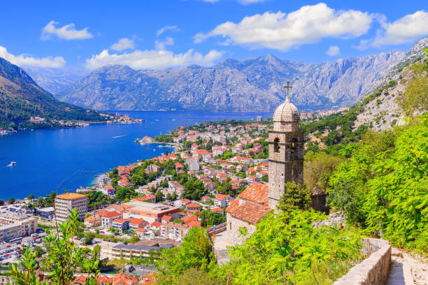

A cidade de montenegro está localizada no sul da pensilvania e conta com diversos animais e atrações diferentes em cada localidade presente na sua ambientação.

Cinque Terre comprises five villages: Monterosso, Vernazza, Corniglia, Manarola, and Riomaggiore.
On the northwest cost of the Italian Riviera, north of the city La Spezia.
The Walk is free!